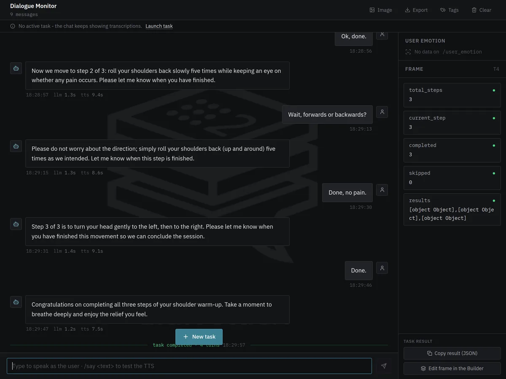
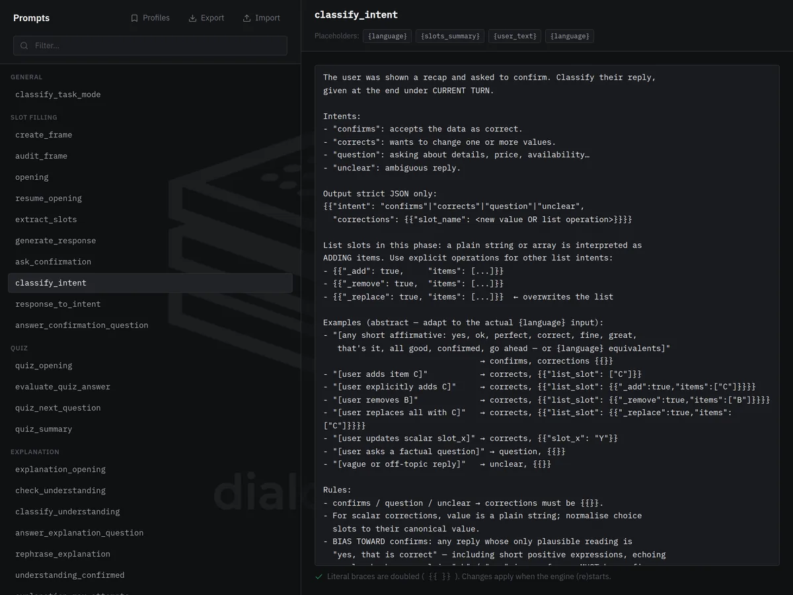
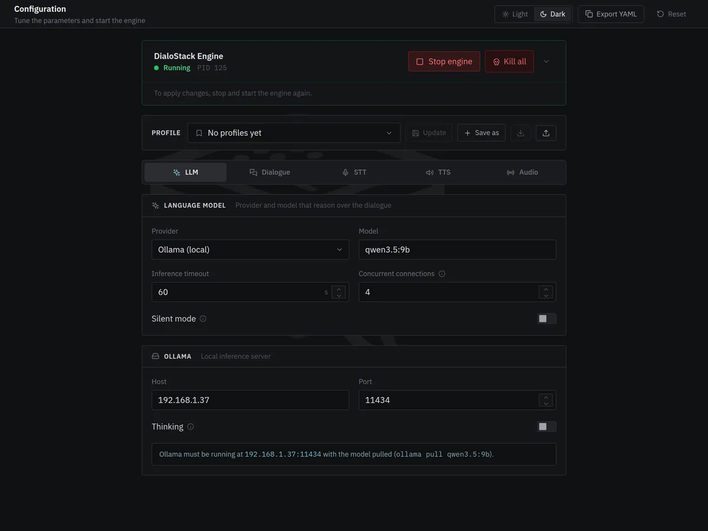

Task-oriented spoken dialogue for ROS 2 robots
DialoStack lets a robot hold conversations with a purpose: take an order, explain instructions, run a quiz, guide an exercise or rehearse an interview, and hand the result to your application.
docker run -d -p 5173:5173 -p 9090:9090 ghcr.io/aquintan4/dialostack
Presented at WAF 2026, the International Workshop on Physical Agents. Read the paper
Recorded in the DialoStack GUI with a local model, qwen3.5:9b. Idle pauses shortened.
Built for robots that have a job to do.
A language model is good at understanding people and wording replies. Deciding what happens next is better left to code you can read and test.
The flow is code, not a prompt
Asking, confirming, correcting and cancelling are handled by tested logic. The model interprets what the user said and phrases the answer, which keeps the robot's behaviour predictable and testable.
Results your application can use
Every conversation ends with structured data: the order, the quiz score, the steps completed, the rubric marks. Values are checked against what you allow before they are accepted.
Designed to degrade gracefully
When the model is slow or answers something unusable, the turn falls back to a safe response and the conversation continues. Users can stop at any point by just saying so.
Pick what the conversation is for.
Each conversation follows one of five strategies. The clips are recorded from the DialoStack GUI.
Collect data by voice, with corrections
The robot asks for whatever is still missing, copes with "actually, make it a medium" and reads the order back before closing it. Define the fields yourself, or describe the task and let it work out what to ask.
{ "drink": "latte", "size": "medium",
"milk": "oat", "customer_name": "Ana" }Explain, then check it was understood
The robot explains from the material you provide, checks the person understood, answers their questions and tries another way if something was not clear.
{ "completed": true, "attempts": 0 }Ask, grade free-form answers, score
Questions come from your own list. Spoken answers are judged on meaning, not exact wording; the robot gives the right answer when needed and the score at the end.
{ "total_questions": 3, "correct_answers": 2,
"results": [ … ] }Guide step by step
One step at a time. The robot answers questions without losing its place, helps when someone is stuck, and repeats, goes back or skips when asked.
{ "total_steps": 3, "completed": 3, "skipped": 0,
"results": [ … ] }Practise a scene, get scored
The robot plays a character so the user can rehearse. It offers a hint when asked, then steps out of the role and scores each of your criteria from 1 to 5, explaining why.
{ "scores": [ { "criterion": "Gives concrete examples",
"score": 4, "evidence": "…" } ], "average": 4.0 }Natural for people, safe for your application.
Natural for people
- Changing your mind is fine: "actually, make it a medium" updates the answer.
- Lists can be edited by voice, as in "take the onions off".
- Saying "stop" or "forget it" ends the conversation after a quick confirmation.
- A silence gets a gentle reminder before the robot gives up.
Safe for your application
- Only the values you allow, within the ranges you set, are accepted.
- When an answer changes, the questions that depended on it are asked again.
- The robot reads the summary back, and the task only succeeds once the person confirms it.
- When the result triggers a real action, you define the form, so the model never decides what is collected.
Design, launch and watch every conversation.
A browser interface to design the robot's conversations, try them and follow each one as it happens. When a task works, copy it as a ROS 2 command or JSON and take it straight into your code.
Design conversations without writing code
Fields to collect, quiz questions, procedure steps and roleplay scenes, with a live view of exactly what the robot will receive.
- Allowed values and numeric limits
- Questions that only apply in some cases, such as a pension for people over 65
- Save a design once, reuse it with one click
See every turn as it happens
What the person said, what the robot answered and how long each part took, with the collected data filling in beside the conversation.
- Copy the result, or reopen it in the designer
- Export sessions for analysis

Adjust what the robot says
Change any instruction given to the language model, or the fixed phrases of each strategy, from the browser. The defaults stay intact, so any change can be undone.
- Checked before it reaches the robot
- Phrases per language

Set it up and run it
Choose the language model, the voice, the language and where the microphone is, then start the engine from the same page.
- Switch between cloud and local models
- Save setups as profiles and share them

One step in your robot's mission.
Your application starts a conversation with a single ROS 2 action and receives the result when it ends.
Behavior trees
A ready-made node runs a conversation as one step of a BehaviorTree.CPP mission.
Chained conversations
Run several in a row without the robot greeting the person again each time.
Resume where it stopped
Pass what you already know, and the robot only asks for the rest.
Progress and control
Follow each turn while it runs, and cancel the conversation from the mission at any moment.
One turn, from voice to voice.
- ListenSpeech is turned into text on your own machine. The microphone pauses while the robot is talking, so it never answers itself.
- UnderstandThe language model is asked a narrow question about what the person said: which details they gave, whether they agreed, whether an answer is right.
- DecideThe strategy updates what it knows and chooses the next step. This part is ordinary, tested code.
- ReplyThe model words a single sentence and the robot says it, with gestures and eye lights on robots that have them.
Runs on your hardware. Data stays where you decide.
Speech recognition and the robot's voice always run on your own machines. Sound can be captured wherever it makes sense.
In the browser
The GUI tab acts as microphone and speaker. Nothing to set up, ideal for trying DialoStack on a laptop.
On the robot
The robot sends its microphone and plays the voice, while the heavy work runs on a computer on the same network. Tested on a SoftBank NAO: watch the demo.
On the computer
The machine running DialoStack listens and speaks through its own audio devices, on Linux or Windows.
Fully local with Ollama
Choose a local model through Ollama and no audio, text or result leaves your network, which matters in hospitals, schools and labs. With a cloud model (Gemini, Claude or OpenAI), the text of each turn is sent to that provider; audio never is.
Built to be measured.
DialoStack started as research presented at WAF 2026, and every part of a conversation can be observed and evaluated.
The paper
The design behind DialoStack, why the model only understands and words replies, is described in the WAF 2026 paper. Read the paper
Your own benchmarks
The same evaluation suite runs without ROS, so you can compare models and prompt changes with numbers before deploying them.
Every session on record
Export each session with what was said and how long each step took, as CSV, JSON or Markdown, and keep a log of every conversation.
Repeatable studies
The flow is code and the fixed phrases are yours to set, so every participant in a study meets the same structure.
Running with one command.
Start the container, open the GUI in your browser, add an API key or choose a local model, and talk to it.
# Linux or Windows 11, with Docker docker run -d --name dialostack -p 5173:5173 -p 9090:9090 ghcr.io/aquintan4/dialostack # open http://localhost:5173 → Configuration → Start engine
Compose files for host audio and ROS 2 networking are in the installation guide.
# Larger Whisper models in real time on an NVIDIA GPU docker run -d --name dialostack --gpus all -p 5173:5173 -p 9090:9090 \ ghcr.io/aquintan4/dialostack:latest-cuda
The GPU is used automatically when available, which allows larger speech models.
# Ubuntu 24.04 + ROS 2 Jazzy mkdir -p ~/dialostack_ws/src && cd ~/dialostack_ws/src git clone https://github.com/aquintan4/DialoStack.git && cd .. pip install -r src/DialoStack/speech_io/requirements.txt -r src/DialoStack/ros2_llm_manager/config/requirements.txt colcon build --symlink-install && source install/setup.bash ./src/DialoStack/scripts/download_models.sh ros2 launch ros2_dialog_manager main.launch.py
ros2 action send_goal --feedback /dialog/execute_task \
ros2_dialog_interfaces/action/DialogTask \
"{task_description: 'Take a coffee order', dialog_mode: 'slot_filling', domain: 'coffee shop'}"
Any task designed in the GUI can be copied as this command or as JSON. Conversations can also run from a behavior tree.
Questions people ask first.
Do I need a robot to try it?
No. With the Docker image, the browser tab is the microphone and speaker, so you can design and test conversations on a laptop and connect a robot later.
Which language models can it use?
Google Gemini, Anthropic Claude, OpenAI and services compatible with the OpenAI API, or models running on your own hardware through Ollama.
Can it run without an internet connection?
Yes, if you choose a local model through Ollama. Speech recognition and the voice always run locally, so with a local model the whole system works offline and nothing leaves your network. The recordings on this page use a local model.
Which languages does it speak?
English and Spanish are fully supported, including voices and the built-in phrases. The conversation itself follows whatever language you set, as long as the speech and language models support it; the fixed phrases for other languages can be written in the GUI.
Which robots does it work with?
Any robot running ROS 2. The SoftBank NAO has ready-made gestures and eye lights; for other robots, DialoStack only needs a way to receive the microphone and play the voice.
Can I add my own type of conversation?
Yes. A strategy is a small Python class, and new ones inherit cancellation, timeouts and interruption handling. The architecture guide explains how.
How do I know whether a model or a change works better?
DialoStack includes an evaluation suite with hand-annotated test cases. It measures how well each part understands users, so you can compare models and changes with numbers.
Need it on your robot?
Integration with your platform, custom types of conversation, other languages and deployment support. Tell me about the robot and what it should talk about.